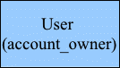
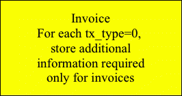

DoctorCom Customer Billing
Requirements:
Bill customers once a month, on the the 1st of each month for products subscribed for each month ahead, AND any other charges that occurred in previous month.
Billing should be per Practice Group, which may consist on one or more practice locations.
Prices per product are set by DoctorCom per each Practice Group. Prices can be changed by DoctorCom via manual update of individual product in set of product for the Practice Group.
ALL Super Managers of each Practice Group can view account transaction information. But only one who put CC on file can view/edit CC data.
Only One credit card per Practice Group is allowed on file. Develop process for changing owner of credit card, in case Super Manger who put it on file leaves practice.
Prorate first month charge based on training period end. For example if training ended on 6/20, first invoice on 7/1 should include a month charge for July and 10 days charge for June. This applied per product charge NOT per entire account.
Bill TOTAL amount due at the 1st of the month to Credit Card in ONE transactions.
If NO total is due or customer has credit with us, create invoice for that amount, but do NOT process payment.
Keep track of each individual charge that are product subscription monthly fees (one for product used by Practice Group, not individual practices) and any other charges that may occur (examples are referral fees, twillio usage fees). Also, keep track of all payments made.
Communication to the end user of auto-payment are done via system messaging. Communication of rejected transactions are done via system messaging. These messages are sent to the user who is the OWNER of billing account associated with group practice. The notifications of rejected transactions are also sent via email to support@mdcom.com
Flow for failed payments. If braintree rejects our request for recurring payment, we will NOT reprocess payment till next invoice cycle. Meanwhile we will investigate why payment failed, and work with customer to update his billing data. Next invoice will add up previously owed amount into new invoice total and bill to in one single transaction.
Future development: When account owner updates account billing instrument, if last invoice failed, charge amount of last invoice immediately. Note that new charges that may happen after last rejected payment as referral fees will NOT be added to the immediate charge amount.
Set up For version 0.1
A. New Concept to DoctorCom Infrastructure: Practice Groups – entity conmosed of one or more practice locations, doctorcom's billing unit.
As part of version 0.1 roll out following will be done in production.
Current MHLPractices_practicegroup_location table which was never used will be DRPOPED.
Current MHLPractices_practicegroup which was never used will be DRPOPED.
Instead new MHLPractices_practicegroup table will be created:
(
`id` integer AUTO_INCREMENT NOT NULL PRIMARY KEY,
`description` varchar(255),
`address` longtext
)
Also column `practice_group_id` INT will be added to current MHLPractices_practicelocation table. Intial value is NULL, and manual set up is necessary to tie practice locations to practice group.
On paper, identify ALL locations that will be set up for auto-billing.
On paper, map ALL locations from 1 into Practice Groups. EACH location MUST have Practice Group, even if it is ONE TO ONE relationship.
Having data from 2, use django admin and create Practice Group.
Then for each location identified in step 1, use django admin and map it to Practice Group.
B. Super Manager – Must be office manager of practice location that is associated with Practice Group, financially responsible for Practice Group. Each Practice Group there must be at least one super manager. He/she can be at any practice location of the practice group. If there is more than one super manager (for example, there are three practice locations in one practice group, and each location has super manager) only one of the super manager will put CC on file and can change cc info. Also only one will get notification of auto-billing or rejected payment. ALL super managers will see account transactions. For next version we will revisit requirements for multiple super managers within practice group. May be allow manager too, where to add link if yes?
On paper, for each practice group to be set up for auto-billing, list locations.
On paper, for each location list managers and mark super managers. On paper, map location managers to practice group.
If at least one super manager exist for practice group, write him down next to practice group name/number.
If more than one super manager exist for practice group, write all down next to practice group name/number. Group Practice will have to decide which super manager will put CC on file.
If no super managers exist in Group Practice, determine, who will put CC on file and use django admin to promote that manager to super manager role.
C. Products and Subscriptions – products are generic definitions of out products. Subscription are basis for billing Practice Groups monthly. Subscription must be for a product existing in Products and for existing Practice Group. Subscription must be Active at the time invoices are created in order to be charged for. Subscription must have start date on or before first day of the month invoice is created for.
Use django admin, verify all Products are set up in products table. If not, enter all products we are billing for.
Use django admin to enter product/practice group Subscription into Subscription table. Make sure start date and active flags are set up for the practice groups you want to set up for auto-billing. For groups composed of multiple locations, create only ONE subscription per product with ONLY price covering all locations.
D Customer accounts – each practice group must provide a CC and set up account. CC are stored at Braintree and account information at our server. Account information does not contain any sensitive information, it hold account status, last payment date, last payment status. Accounts have ONT TO ONE to practice group, and also have ONE owner who is super manager at the practice group.
Contact each super manager of group practice that will participate in 0.1 release auto-billing. Provide them with following url: /billing/payments-billing/ and instruct them to put CC on file.
Use django admin and verify that accounts exist for each group practice that we will auto-bill. Take a note of who is account owner.
Make sure no ACTIVE account exist for cutomers not participting in 0.1 release. (Status must be that of Active or Grace)
Use django admin to verify that braintree vaults exist for each of the account owners in step 2.
SET UP IS DONE.
MONTHLY BILLING:
Run python manage.py create_invoices.
Use django admin to verify invoices are created correctly (look at accounttransaction and invoice tables)
Run python manage.py dispatch_invoices
Use django admin to verify billing went thru (look at accounttransaction, invoice and braintree_paymentlog tables, for failed trasnactions look at failedtransactions table)
Log in to braintree and see payments transactions and their status.
For failed payments, reprocessing can be done at any time by running python manage.py dispatch_invoices during current month (all failed payments will be retried), or at the next billing cycle amount owed will be added to next invoice. In future versions, amount owed will be charged real time when customer updates CC on file. Need more specification for those who will not update CC, including not reprocessing and suspending accounts.
Details on Monthly billing:
Billing consists of two batch jobs:
create_invoices –
Looks up for active accounts (active or grace status).
Checks if invoice for this month exists, if yes, exit.
If not, retrieves all ACTIVE subscriptions for practice group associates with account.
Checks if start date is on or before first day or current period. If not, do not invoice, go to next subscription.
If yes, create charge line item on customer's account for current month using price set in subscription In case start_date was in previous month add prorated amount for number of days used in previous month to the charge.
After all charge lines are created for each qualifying subscription for group practice, retrieve last invoice amount and all all charges and payments and create new invoice.
dispatch_invoices -
Looks up for active accounts (active or grace status).
For each account, retrieves invoice.
If invoice exists, checks if invoice paid. If yes, skip.
If not, checks if invoice amount is positive. If not, skip.
If yes, checks if vault exists for the owner of the account, if not,
updates invoice to failed,
updates account's last bill date, last payment status (to non attempted) and last payment failed information
sends secure message to account owner informing him of the failure
sends email to support@mdcom.com informing us of failed transaction
If yes, send call to braintree to charge customer for this invoice.
If braintree sends back success, credit card is charged
updates invoice to paid,
creates payment account transaction
updates account's last bill date, last payment status and last payment failed information
sends secure message to account owner informing him of the charge
If charge fails
updates invoice to failed,
updates account's last bill date, last payment status and last payment failed information
sends secure message to account owner informing him of the failure
sends email to support@mdcom.com informing us of failed transaction
TEST CASES:
ADD ACCOUNT try link on
one group - one location:
super manager - GOOD
second super manager –
provider - 403
not super manager - 403
office staff not manager
one group - two locations:
super manager - GOOD
second super manager - GOOD, show that exists but no details
provider
not super manager
office staff not manager - ACL
practice without group practice - ACL
VIEW ACCOUNT LINK
one group - one location:
super manager - before account created no link, after link shown, if manual GOOD
second super manager
provider – no link shown, if manual url 403
not super manager – GOOD, just like super manager if entered manually, since no profile available no link will show
office staff not manager
one group - two locations:
super manager - before account created no link, after link shown, if manual GOOD
second super manager - GOOD
provider
not super manager
office staff not manager - ACL
practice without group practice - ACL
3. CREATE AND CHARGE INVOICES
Current month
Started last month
Started first day of this month
Not active subscription
Rerun invoices
Rerun payements
Previous invoice failed last month, updated CC
Previous invoice failed last month, NOT updated CC
Genbilling (custom billing and subscriptions module) Tables,
Top portion indicated set up before billing can occur

